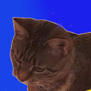

|
BRANDY
NGUYEN
|
 |
|
|

|
|
Color Crimson > My Third Favorite Color |
|
Crimson is a dark shade of the color red with hints of brown. It shares the warm feelings that the color red invokes in us. It is reminiscent of the warmth that we feel in nature and humanity's passion. Passion is not limited to romance and love. Red also symbolizes other acts of passion such as anger and violence. For crimson specifically, it tends to represent the autumn season due to it being the color of fallen red leaves. Personally, I love crimson red for how it radiates intimacy. This is due to how crimson is a warm color that's akin to a soothing red sunset. VIEW SOURCES |
Sources:
-
Koval, Vitjok. "Autumn Maple Tree Forest" GoodFon, GoodFon, 16 Dec. 2014,
https://www.goodfon.com/wallpaper/derevya‐listya‐osen‐bagryanec.html . Accessed 6 Feb. 2023. -
Olesen, Jacob. "Red Color Meaning: The Color Red Symbolizes Passion and Energy."
Color Meanings, Color Meanings,
5 Dec. 2022, https://www.color‐meanings.com/red‐color‐meaning‐the‐color‐red/ . -
"Warm Colors ‐ What Is The Difference Between Cool and Warm Colors?"
Artincontext.org, ArtInContext, 8 Sept. 2022,
https://artincontext.org/warm‐colors/#:~:text=Report%20Ad‐,What%20Are%20Warm%20Colors%3F,hue%2C%20will%20also%
20be%20warm .
| PREV PAGE |
Site Links |
NEXT PAGE |
|
Brandy Nguyen
bnguyen11@neiu.edu CS300 Spring 2023 |
||